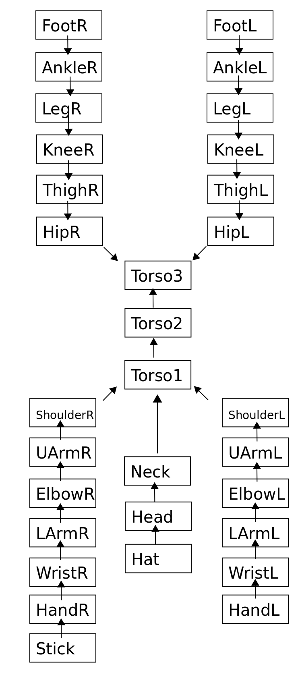

This is the report for part 1 of the second assignment of our Computer Graphics course. The assignment is to create an animation of a music box, complete with a dancing figure that pops up when the box is opened. Code written by Anirudh Vemula and Rohan Prinja.
Some screenshots of our program:
The wooden dancing doll was drawn using the following hierarchical model:
The model is rooted at Torso3, that is, the bottom-most torso of the dancer.
The dancer is drawn with the function draw_dancer(). This function takes an input an array of 40 floats. Each element in the array corresponds to one of the degrees of freedom of the dancer. Here is the mapping of the array elements to the degrees of the freedom that they represent:
| Array Elements | Joint |
|---|---|
| 0 to 2 | head-neck joint |
| 3 to 5 | left shoulder |
| 6 to 8 | right shoulder |
| 9 to 11 | neck-torso1 joint |
| 12 to 14 | torso1-torso2 joint |
| 15 to 17 | torso2-torso3 joint |
| 18 to 20 | left hip |
| 21 to 23 | right hip |
| 24 to 26 | left ankle |
| 27 to 29 | right ankle |
| 30 to 32 | left wrist |
| 33 to 35 | right wrist |
| 36 | left knee |
| 37 | right knee |
| 38 | left elbow |
| 39 | right elbow |
See the README in the source for help on how to compile, run and use the program.
This program was coded in C++ using OpenGL. The source code is on github
The first assignment of our course can be found here